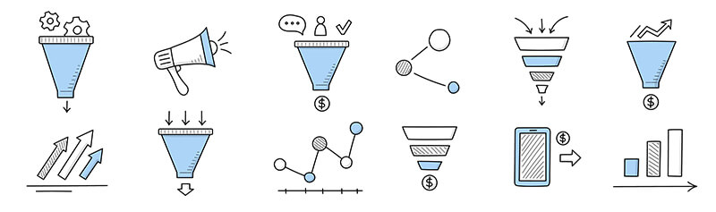
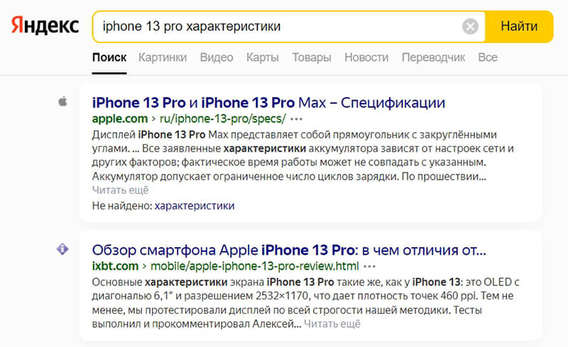
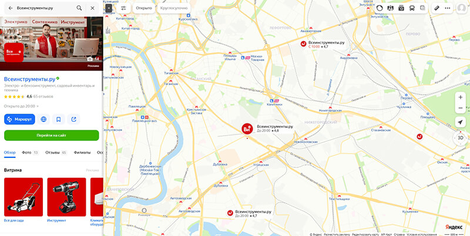
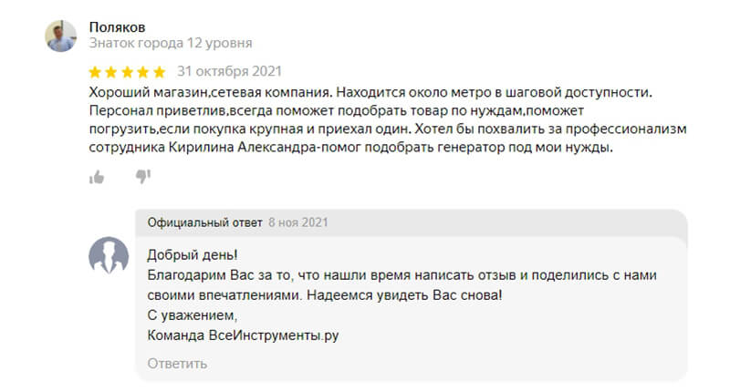
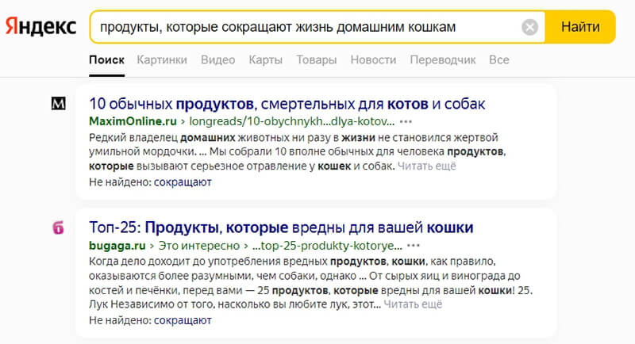
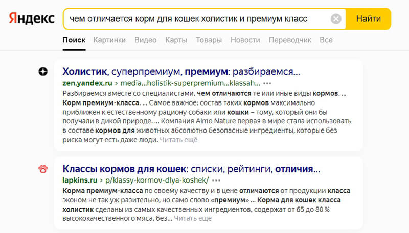
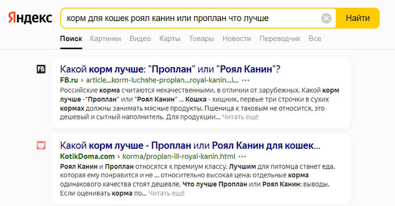
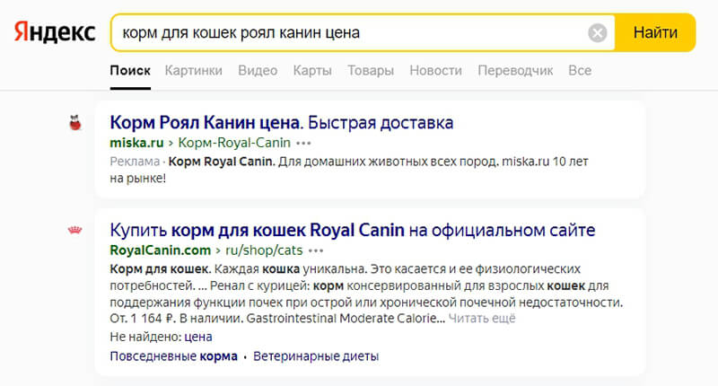

Весь маркетинг строится на том, как правильно склонить клиента к покупке. Каждый маркетолог скажет, что необходимо выстроить воронку продаж, вовлечь в нее аудиторию, после чего аккуратно подводить ее к приобретению нужного нам товара. Лестница Бена Ханта как раз рассказывает о такого рода воронке продаж, где есть четкое разделение состояния потенциальных клиентов по степени информированности о бренде и предлагаемых им продуктах. Это позволяет использовать 6 разных шаблонов действий, в зависимости от ступени, на которой сейчас находится потребитель.
Цель этой статьи — научить вас в полном объеме пользоваться лестницей Бена Ханта. Даем подробное описание этого полезного инструмента для маркетинга, приводим примеры его использования в маркетинге, полезные рекомендации.
Что такое лестница узнавания Бена Ханта
Лестница узнавания — это пошаговая маркетинговая модель, согласно которой клиент проходит путь от полной неосведомленности до покупки за шесть шагов. Для каждого шага, или уровня лестницы, есть свои инструменты и принципы работы с клиентом.
Основная идея: насколько бы ни был крутым ваш продукт, всегда будут люди которые готовы у вас купить и те, которым нужен ваш продукт, но про его существование они не знают.
Поэтому было принято решение разделить всю целевую аудиторию на определенные группы по узнаванию, и к каждой из этих групп стали применять свои стратегии привлечения. Более того, на каждой из ступеней лестницы Ханта есть свои показатели конверсии продаж, и они очень сильно зависят от того, насколько высоко по этой лестнице поднялся ваш клиент.
{kind=link}
Вот шесть ступеней лестницы Ханта:
- Отсутствие проблемы: клиент не осознает, что она есть, и не стремится её решить.
- Наличие проблемы: клиент узнал о ней, но пока не понимает, как её решать.
- Поиск решения: клиент ищет варианты, сравнивает их между собой, знакомится с разными продуктами.
- Конкретное решение, выбор: клиент знает, что может помочь, однако ему нужно больше информации о преимуществах выбранного варианта. Его нужно подтолкнуть к выбору.
- Уверенность и намерение. Клиент знает о преимуществах, но еще не убежден.
- Покупка: клиент приобретает продукт или услугу.
На каждом из уровней, осведомленность клиента о его проблеме и вашем продукте совершенно разная.
История возникновения лестницы Бена Ханта
Путь формирования ступеней узнавания начался в 1950 году — в бизнесе всем стал известен такой человек как Юджин Шварц. Его и по сей день считают гуру маркетинга и копирайтинга. Он разработал теорию трансформирования характеристик товара в пользу потребителя и издал книгу «Breakthrough Advertising» («Прорывная реклама», датирована 1966 г.).
Юджин считал, что хороший маркетолог должен знать все состояния и положения аудитории на пути к покупке, и уметь сформулировать для каждого УТП. Но с появлением интернета и развитием маркетинга теория Шварца стала нуждаться в совершенствовании. Именно это и сделал в 2010 году Бен Хант в своей книге «Конверсия сайта: превращаем посетителей в покупателей!». В основе книги лежат те самые принципы маркетинга, которые в середине прошлого века разработал Шварц, только Хант немного трансформировал их. В своей книге Бен Хант предложил ранжировать клиентов по степени увеличения объема их знаний о компании и продукте, который она предлагает.
И хотя лестница Ханта в теории маркетинга не сразу была воспринята всерьез, практика показала, что заложенные в его теории принципы способствуют эффективному продвижению бизнеса. Сегодня ее стали активно использовать владельцы интернет-магазинов, предприниматели, продвигающие свой бизнес через SMM, разработчики коммерческих предложений и т. д.
Наибольшего успеха она достигла при:
- развитии интернет-бизнесов;
- создании лендинг пейдж;
- продвижении с помощью email-маркетинга;
- разработке УТП;
- создании комплекса маркетинговых материалов — маркетинг-кита;
- увеличении количества посетителей на веб-ресурсе;
- разработки оффлайн рекламных материалов и PR-компаний;
- использовании соцсетей для продвижения компании (ответы в директе в инстаграм, вконтакте, аудитория лояльная).
«Человеку, который идёт в хозяйственный магазин за шестимиллиметровым сверлом, не нужно сверло — ему нужно шестимиллиметровое отверстие». БЕН ХАНТ
Значение лестницы Ханта для бизнеса
Лестница узнавания или, как ее еще называют, лестница осознанности — это продуманное и ступенчатое вовлечение человека в воронку продаж. В оригинале Хант назвал ее “Awareness Ladder”. Правильные действия на каждом этапе укрепляют доверие к бренду и превращают покупателя в верного и постоянного, повышая его осознанность. Для этого маркетологам надо поддерживать связь с аудиторией постоянно. Без опытного специалиста, который сможет определить положение клиента и руководить процессом, результата не добиться.
На каждой ступени продавец или маркетолог предлагает аудитории то, что для нее актуально. За счет грамотного выстраивания этапов складывается ощущение, что бренд понимает клиентов, разделяет их боль и дает решение. Но на самом деле компания предвосхищает желания, потребности, пути и направляет по ним до покупки.
Компания всегда сама решает с клиентами какого уровня работать. Например, можно выбрать только клиентов высокого уровня осознанности или сфокусироваться на всей целевой аудитории. Первый тип неоспоримо более выгоден, поскольку покупатель активно уже ищет решение своей проблемы. Однако конкуренция и борьба за такого клиента выше.
Правило, которое распространяется на все виды деятельности, — успех бизнеса будет масштабнее, если компания верно определит степень потребительской осознанности, присущей ее клиентам. Удовлетворять запросы ЦА будет гораздо проще, а значит, взаимоотношения будут эффективнее.
Законы лестницы Ханта
Лестницу узнавания строят на нескольких основных законах:
{kind=link}
- С первого по четвертый этапы считаются информационными. На этих ступенях потребитель не готов сделать окончательный выбор в пользу компании, он находится в поиске и рассматривает оптимальные варианты.
- Любой будущий клиент начинает путь с первого этапа, на котором еще не осознает зарождающуюся потребность.
- Только на последнем этапе покупатели приобретают товары или услуги.
- Последовательность ступеней Awareness Ladder стабильна — стадии следуют одна за другой, они все обязательны, как и соблюдение их очередности. Потребитель не должен перескакивать через этапы.
Классификация клиентов лестницы Ханта
Существует три основных типа пользователей на рынке:
{kind=link}
- Холодный. Потребитель еще не думает о проблеме или лишь начинает размышлять над ней. У человека еще нет заинтересованности в продукте, поэтому ему не надо ничего конкретного предлагать.
- Теплый. Потребитель понял, что проблема есть, и ищет способы ее решения.
- Горячий. Потребитель начитался, насмотрелся и готов приобрести продукт, чтобы решить проблему. Начинает искать отзывы и оценки клиентов на разных продавцов, выбирает подходящие под его критерии варианты.
Взаимодействие с клиентом строится с учетом его типа. Игнорирование степени готовности способно оттолкнуть потребителя, вследствие чего он пойдет к конкурентам.
Основные этапы лестницы Ханта
После введения Беном Хантом понятия «лестница узнавания», у маркетологов появился новый инструмент для эффективной работы. С помощью него специалисты могут выделять сегменты целевых запросов, затем – подготавливать соответствующий контент, коммерческие предложения и так далее.
{kind=link}
Лестница узнавания состоит из шести ступеней, находясь на каждой из которых потребитель сталкивается с конкретной проблемой. Задача маркетолога и заключается в ее решении.
Итак, разберем подробнее ступени лестницы Бена Ханта.
0 ступень - Отсутствие проблемы
Клиент не осознает, что она есть, и не стремится её решить. На примере Ville & Company: чиновник не знает о законодательных изменениях, которые повлияют на его работу, или по крайней мере не интересуется ими.
{kind=link}
Задача специалиста: придать проблеме актуальности, убедить клиента в том, что ему нужен именно этот товар. На данном этапе бессмысленно формировать торговое предложение, рано что-то продавать — клиент нуждается в информации.
Привлекать потребителя нужно ярко, задействуем его глаза. Красочные изображения, небольшие видео и прочий контент укажут на проблему или, по крайне мере, заставят задуматься о возможности ее возникновения в будущем.
1 ступень - Наличие проблемы
Клиент узнал о ней, но пока не понимает, как её решать. Например, госслужащий знает об изменениях, но не уверен, что с этим что-то нужно делать.
Задача специалиста - показать, что решение есть. Потребитель нуждается в статистических данных. У него есть проблема, но ему нужно заверение, что решение есть, и подсказка, где его найти. В этом ему смогут помочь отзывы и комментарии других людей, которые столкнулись с такой же проблемой.
2 ступень - Поиск решения
Клиент ищет варианты, сравнивает их между собой, знакомится с разными продуктами. Какие у госслужащего есть способы подготовиться к изменениям? Поручить этот процесс сотруднику, нанять консультанта, собрать информацию в интернете самому, пройти краткосрочный обучающий курс.
Задача маркетолога: проинформировать потенциальных клиентов о том, что у вас есть решение, которое закроет их потребность. На этой ступени не обязательно подробно рассказывать о продукте, достаточно упомянуть его. Хант утверждает: главное — чтобы люди запомнили ваше предложение, начали сами искать информацию о нём.
3 ступень - Конкретное решение
Клиент знает, что может помочь, однако ему нужно больше информации о преимуществах выбранного варианта. Например, чиновник уже решил привлечь консультанта. Теперь он ищет подходящего.
Задача специалиста: задействовать все инструменты распространения информации о торговой марке и продукции. Клиент будет читать отзывы, вводить запросы в поисковых системах, регистрироваться на тематических площадках, подписываться на рассылки и участвовать в форумах. Это хорошая возможность преподать качественный обзорный и максимально информативный контент. Не стоит навязывать продажу.
4 ступень - Уверенность и намерение
Клиент знает о преимуществах, но еще не убежден: клиент узнал, чем хороши конкретная компания и её предложение. Чиновник полагает, что Ville & Company — это верный выбор. Но окончательное решение ещё не принято.
Задача маркетолога: преподнести товар в лучшем свете. Этот шаг очень важен, ведь клиент анализирует всю собранную информацию.
Например, предоставить:
- Сравнения с аналогичной продукцией.
- Результаты экспериментов.
- Доказательства выгоды или окупаемости.
- Результаты использования товара.
- Живые фото и видео обзоры.
5 ступень - Покупка
Клиент приобретает продукт или услугу, заключает сделку.
Задача специалиста: сформировать уникальное торговое предложение. Маркетологам нужно активно рассказать о преимуществах своего товара перед продукцией конкурентов, о скидках и акциях, бесплатных подарках, доставке. Нужно убедить, что ваша компания выгоднее и лучше. А также можно предложить товар, который отлично дополнит покупку клиента и увеличит вам средний чек.
Помните, что маркетолог должен понять, где находится потенциальный покупатель, и провести его вверх по лестнице. Нижним уровням бессмысленно продавать «в лоб». Нужно прогревать аудиторию, а не навязывать ей продукт, о котором она не знает. Хант напоминает: потенциальным покупателям нужен не товар, а решение их проблем.
Воронка продаж по лестнице Ханта
Лестница продаж и лестница узнавания описывают путь потенциального покупателя от незаинтересованности до готовности совершить покупку. Первая схема применима к процессу прямых продаж, а вторая начинает работать ещё задолго до знакомства возможного клиента с представителем компании. Знание основных шагов позволяет эффективно работать со всеми стадиями воронки продаж.
Основы воронки продаж:
{kind=link}
- Установление контакта. Все начинается с этого, а главная цель контакта — привлечение внимания. Помните, что покупатель в любом случае — человек или группа людей, даже если это сегмент B2B. Поэтому направляйте действия не на абстрактные фирмы, а на конкретных людей.
- Выявление потребностей. Это необходимо выявить во время разговора или обсуждения проблем клиентов. Почему это важно? Возьмём смартфон. Деловому человеку нужно, чтобы были надежная связь, много бизнес-приложений и др. Двенадцатилетней девочке понадобятся игры, яркий внешний вид. Один и тот же товар закрывает разные боли у разных категорий людей.
- Презентация. На этом этапе важно вызвать желание. Покажите покупателю, что ваш товар закрывает его потребности.
- Работа с возражениями. Обработка возражений помогает усилить и закрепить желание клиента.
- Завершение сделки и оформление продажи.
Правила работы с лестницей Ханта
Лестница узнавания Бена Ханта станет действительно эффективным инструментом продвижения бизнеса, если вы будете соблюдать следующие правила маркетинговой концепции:
{kind=link}
- Все клиенты в какой-то момент начинают с нулевого этапа: они не осознают потребности в продукте.
- Продвижению подлежит только один продукт, и он должен соответствовать запросам лишь одного сегмента вашей целевой аудитории.
- Каналов продвижения и привлечения трафика должно быть много.
- Полезный контент должен создаваться в системе и соответствовать задачам каждого этапа.
- Покупка происходит только на пятой ступени, когда человек убежден, что продукт полностью удовлетворит его потребности.
- Ряд последователен — потенциальные клиенты не могут перепрыгивать через ступени лестницы. Нельзя перейти к покупке, если клиент не осознал проблему.
Принципы лестницы узнавания Бена Ханта
Лестница узнавания Бена Ханта опирается на следующие принципы:
- В ходе первых четырех шагов клиенту необходима только информация. Выбор компании, которая может обеспечить его необходимым продуктом, он еще не сделал, но активно ищет самый лучший вариант.
- Путь клиента к покупке начинается с первой ступени, когда потребность в продукте еще не осознана, но уже существуют предпосылки к ее возникновению.
- Предлагать товар и рассчитывать на то, что клиент совершит покупку, можно только на последней ступени. Раньше давить на продажу не следует
- Привести покупателя к покупке, обходя какие-то ступени, почти нереально — лишь успешное прохождение каждой может гарантировать положительный результат и выгоду от сотрудничества. На последней ступени вы можете получить постоянного лояльного клиента.
Срок прохождения лестницы может варьироваться от одного дня до нескольких месяцев. Зависит это как от психологии клиента, так и от стоимости и серьезности покупки. За несколько часов можно пробежаться по лестнице, выбирая пару зимних кроссовок. Если же речь идет о приобретении автомобиля, то движение может осуществляться и год.
Как использовать лестницу узнавания: маркетинговые инструменты на разных ступенях

1 ступень. Отсутствие проблемы или безразличие
- Контент-маркетинг. Самое главное — цепляющий заголовок. Пользователь должен открыть материал и начать чтение — нужна интрига. Но и тексту тоже стоит уделить особое внимание, он должен помочь осознать проблему.
В заголовке лучше использовать слова «как», «зачем» «почему», а также цифры. Кроме того, статьи стоит активно публиковать на сторонних площадках: СМИ, Яндекс.Дзен, популярные интернет-издания и т.д. Это необходимо, чтобы привлечь целевую и околоцелевую аудиторию к вашей тематике. - Реклама. На этапе «Отсутствие проблемы» основная задача рекламы — заманить в свои сети. Для таких целей идеально подойдет тизерная реклама, таргетированная реклама, медийная реклама и реклама на ТВ. Желтые заголовки, яркие картинки будет только плюсом в привлечении внимания аудитории.

Основная задача — настроить единую кампанию на всех этапах. Т.е. оценивать итоговые результаты будем только в общей связке. Задача первой ступени — привлечь, заинтересовать — и на этой ступени оцениваем именно по этим метрикам.
2 ступень. Осведомленность
- Контент-маркетинг. Упор делается на экспертность и профессионализм. Пользователи будут хорошо воспринимать подробные руководства к действию, инструкции, чек-листы, а также разбор всех нюансов проблемы. Чем будет больше полезной информации, тем лучше. Статьи следует размещать в блоге компании.
- Крауд-маркетинг. С помощью этого инструмента вы сможете делать посевы на форумах, площадках вопросов-ответов и обсуждениях на тематических ресурсах и сервисах. На сайтах по теме находится ваша целевая аудитория. Такой способ относится к нативной рекламе. Но чтобы не получить негативную реакцию на свою скрытую рекламу, следуйте 3 простым правилам:
- Пишите в тему.
- Не делайте «рекламу в лоб».
- Смотрите на актуальность обсуждения.
3 ступень. Сравнение методов решения
Потенциального клиента интересует: результативность, цена и нюансы. Поэтому особое внимание стоит уделить сайту и представлению товара/услуги на нем. Вот несколько основных правил:
- Ни в коем случае не прячьте цену от пользователей.
- Подробно опишите услугу/товар — его преимущества и недостатки.
- Пропишите все условия предоставления, политику конфиденциальности.
Стоит задействовать следующие инструменты:
- Поисковое продвижение сайта по коммерческим запросам. Пользователи ищут сведения, в основном, через поисковики Яндекс и Google, на этом этапе их интересуют не информационные статьи и новости, а страницы с товаром/услугой.
- Контекстная реклама и таргетированная реклама. Начнем с контекстной рекламы в Яндекс Директ и Google Ads. В объявлении вы можете прописать все конкурентные преимущества своего товара/услуги и цену на него, чтобы выглядело презентабельно.

4 ступень. Выбор компании
Это одна из самых важных ступеней. Клиент выбирает к какой компании обратиться. Нужно использовать всевозможные инструменты и способы:
- Добавить сайт на карты и в справочники;
- Поработать над сайтом, в том числе и над его продвижением;
Чтобы сайт стал полноценным инструментом продаж, обратите внимание на следующие моменты:

- Наличие УТП. Составьте свое более уникальное торговое предложение.
- Продающие тексты.
- Дизайн. Старые сайты не будут продавать — такой сайт не вызывает доверие.
- Юзабилити. Если сайт не удобный, некоторые разделы работают некорректно, нельзя заказать звонок, увидеть кейсы, при регистрации зависает - клиент уйдет. Создать хорошее юзабилити просто, обратитесь к специалисту.
- Доверие. Посетители должны быть уверены, что вы не мошенники и не компания-однодневка. Поэтому заполните страницу «О компании», разместите отзывы.
- SEO-продвижение. Чтобы улучшить видимость сайта по ключевым запросам в Яндекс и Google, необходимо работать над внешней и внутренней оптимизацией.
- Социальные сети. Удобно получать обратную связь и повышать лояльность клиентов, они могут подписаться и следить за обновлениями. Такой аудитории легче продать услугу, проводить анализ активности и выстраивать отношения. Нужно просто вести страницу компании в социальных сетях.
- Репутация (SERM). Вот несколько основных правил SERM:
- Обрабатывайте все отзывы, давайте персональный ответ на каждый.

- Если пишут негатив, то разбирайтесь в каждой ситуации индивидуально.
- Ни в коем случае не грубите оппоненту и не переходите на личности.
- Мотивируйте клиентов на написание отзыва.
- Ретаргетинг. Для каждой цепочки ретаргетинга нужно специальное предложение.
5 ступень. Заключение сделки
С клиентами нужно работать постоянно, даже после того, как они оформили покупку.
- Допродажа. Предлагайте своим клиентам купить сопутствующие товары/услуги, которые хорошо бы подошли в комплекте. Это поможет увеличить средний чек заказа.
- Email-маркетинг. Хороший инструмент, чтобы напомнить клиентам о компании. К тому же он позволяет вернуть покупателей на сайт и получить новые заказы. Отслеживайте статистику писем: открываемость, количество переходов, отписки. В дальнейшем это поможет скорректировать email-стратегию.
- Ретаргетинг. На последнем этапе тоже есть смысл запустить ретаргетинг (ремаркетинг). Здесь можно показывать рекламу по целям или же через загрузку аудитории в рекламную систему, если вы собирали email или номера телефонов клиентов.
Примеры потребностей лестницы Ханта
Рассмотрим 4 примера из разных отраслей, чтобы максимально точно понять суть лестницы Ханта:
На примере компании, которая продает стройматериалы
Представим компанию, которая занимается продажей стройматериалов.
1 шаг (безразличие). Долгие годы успешно работа шла без сайта, но недавно решили открыть интернет-магазин. В магазине почти нет посетителей, но это их устраивает, потому что интернет – не основной источник продаж. Появляется проблема - формируется и осознается проблема. Кто-то из коллег начинает говорить, что нужен активный блог компании. Таким образом можно заработать деньги с продаж в интернете.
2 шаг (осведомленность). Идет поиск возможных путей решения проблемы. Например, директор компании дал указание возобновить работу интернет-магазина, чтобы от него был толк. Маркетологи начинают искать способы поднять продажи через сайт.
3 шаг. Оценка и сравнение способов решения проблемы по различным критериям, аналитика: безопасность, гарантии, стоимость и так далее. На этой же стадии маркетологи из строительного магазина принимают решение по продвижению, разрабатывают стратегию, меняют название и пишут статьи о преимуществах поставщика. Они раздумывают над тем, какой вариант им больше подойдёт: SEO, статьи, SMM или обучающие видео.
4 шаг лестницы (выбор). Находясь тут, маркетологи подыскивают подходящего исполнителя. Допустим, на предыдущей ступени они определились с вектором развития. Теперь перед ними вопрос: заняться этим самому или нанять исполнителя, какие бюджеты стоит выделить, в какой поисковой системе заказать рекламу.
5 шаг, заключительный – покупка. На нём маркетологи выбирают агентство, в котором закажут настройку рекламной кампании и заключают договор.
На примере кошачьего корма
У Маши есть кошка. Маша кормит ее дешевым кормом, колбасой и объедками со стола. Она не задумывается о качестве питания кошки, и как оно влияет на организм питомца - это начало лестницы, она не видит проблемы.
1 этап. Вы — производитель кормов для домашних животных. На сайте вашего интернет-магазина есть блог + от имени компании, интересный автор статей, ведутся страницы в соцсетях. Маша натыкается на статью — «7 продуктов, которые сокращают жизнь домашним кошкам». Так Маша понимает, что качество питания кошки напрямую влияет на здоровье и продолжительность жизни питомца. Главное, на начинает задумываться о том, что нужно изменить рацион своей кошки. Так потенциальный клиент от незнания проблемы переходит в этап осведомленности о ней и становится на первую ступень.

2 этап. Маша решила узнать больше о правильном питании кошек и начала читать другие статьи, а также смотреть видео. Она поняла, что есть разные типы кормов (эконом, премиум, холистик).

3 этап. Маша начала разбираться, что из натуральных продуктов можно давать кошкам, а что нет, какие есть витамины и добавки. Ищет способы решения проблемы.

4 этап. Маша уже знает, чего хочет и ищет компанию/магазин, где будет совершать покупку. Здесь важно суметь предложить самые выгодные условия, чтобы клиент в итоге сделал выбор в вашу пользу. Но у лестницы Ханта есть приятный бонус — если потенциальный клиент прошел все 3 этапа через ваш контент (например, статьи и видео), то у него уже складывается лояльное отношение к компании. Довести клиента до сделки — дело техники.

5 этап. Заключение сделки - покупка у вас. Маша сделала выбор, решила свою проблему, благодаря грамотной комплексной работе маркетологов и менеджеров.
На примере заболевания
Допустим, вы занимаетесь производством компрессионного белья.
1 этап. У Миши варикозное расширение вен, которое его сильно не волновало - он не осознает проблему, ее нет.
Позже он смотрит рекламу, общается с друзьями или пошел к врачу, где узнал о последствиях болезни. Начинает задумывать, что ему нужно что-то делать. Так он начал свой путь по лестнице.
2 этап. Он начинает искать решение, смотрит предложения клиник, изучает все о компрессионном белье, обращается за консультацией, и читает отзывы.
3 этап. Он решает на остановится на компрессионном белье, оно его устраивает по всем критериям.
4 этап. Дальше он и выбирает вашу компанию из-за яркой рекламы и грамотной консультации менеджера, которому он задавал вопросы, и еще смежных факторов.
5 этап. Покупка и обращения в ваш центр - менеджер оказал грамотную консультацию, была настроена качественно реклама и клиент стал вашим постоянным клиентом.
Пример на основе бытовых дел
Есть семья, состоящая из родителей, детей и двух пенсионеров со среднестатистическим доходом, проживающие в двухкомнатной квартире. Семья не собирается переезжать, так как у них еще нет проблемы. Чтобы навести покупателя на проблему, можно использовать рекламу о покупке недвижимости по ТВ, радио, социальных сетях.
1 этап. Семья понимает, что совместная жизнь оставляет мало личного пространства и задумывается о том, как выйти из ситуации. Маркетологи строительных компаний могут публиковать инструкции, как добиться субсидии, куда обращаться и какие документы необходимы, или статьи о том, как важно для психологического комфорта иметь свою комнату. Главное, что контент привлечет даже холодных клиентов.
2 этап. Члены семьи спрашивают советы у друзей, родственников, читают тематические форумы и статьи, стараются посмотреть и узнать мнение со стороны. Сомневаются между двумя решениями: строить частный дом или покупать квартиру.
На этом этапе можно предложить пользователям изучить сравнительные таблицы с достоинствами и недостатками каждого варианта, пройти развлекательные тесты на сайте застройщика. Предложить способы решения проблемы.
3 этап. Семья решает приобрести квартиру побольше. Возникают новые проблемы: в каком районе купить, какую планировку выбрать и т.д. Нужно настроить таргетированную, контекстную, медийную рекламу и SEO, чтобы больше пользователей знали о застройщике.
4 этап. Начинаются поиски конкретного варианта для проблемы с лучшими условиями, просмотр предложений от застройщиков. Клиент должен делает выбор компании.
Маркетологи настраивают таргет, ретаргет и контекстную рекламу с запросами вроде «купить квартиру дешево», «скидка от застройщика» и повышают свои шансы на получение клиента.
5 этап. Это уже успешное совершение сделки.
Как добиться максимального эффекта
Лестницы Ханта будет работать максимально эффективно, если:
{kind=link}
- Продвигать один продукт или услугу. Подбирайте персонализированные предложения для каждого сегмента аудитории.
- Организовывать продвижение через несколько каналов привлечения трафика (платный трафик, трафик с сайтов, email-маркетинг).
- Задействовать разные информационные каналы для вовлечения аудитории (социальные сети, официальный сайт).
- Придерживаться систематичности и регулярности в создании контента. Размещайте посты для подогревания интереса клиентов под каждый из этапов лестницы. Создание контента эффективно повышает активность аудитории на практике.
Основные ошибки маркетологов
- Главная и частая ошибка маркетологов — отсутствие взаимодействия с холодными клиентами. По этой причине компании упускают существенную выгоду. В основном специалисты маркетинга предпочитают работать с клиентами, которые уже самостоятельно дошли до 4–5 ступеней лестницы узнавания, игнорируя тех, кто в самом начале пути. Хотя они могут повлиять на выбор потенциальных клиентов.
- Часто маркетологи не сегментируют ЦА, обращая одну рекламу и для теплых, и для холодных. Очень важно спланировать стратегию для каждого класса потребителей, чтобы заинтересовать как можно больше людей. Если предполагается лендинг, для холодной аудитории он должен быть длинным, с детализацией всех подробностей. Для «горячих» покупателей достаточно 2–3 экранов, чтобы оформить заявку.
Риски применения методики
Движение потребителей к покупке по ступеням лестницы Бена Ханта может быть прямолинейным разве что в теории. На самом деле поведение людей часто бывает непредсказуемо, из-за чего теория не сбывается. Очень редко все происходит по алгоритму, часто играют важную роль эмоции.
Обычно маркетологи поэтапно знакомят клиента с важными характеристиками и преимуществами продукта. Они настойчиво продвигают свое УТП. Но для эффективного маркетинга изложения фактов недостаточно — необходимо активно влиять на эмоциональный фон, возникающий на каждой стадии продвижения к покупке. Для этого существует еще один термин — ЭТП (эмоциональное торговое предложение), который толком не учтен в данной методике.
И самое главное: методика делает неявное и опасное предположение, что у бизнеса уже есть идеальный нужный клиенту продукт, и теперь надо лишь его грамотно предложить. Но на деле это далеко не всегда так. А если продукт действительно разработан на основе глубокого понимания мотивации клиента с учетом разных стадий остроты его проблемы, то можно точно воздействовать на мотивы, ставшие известными при создании продукта. Соответственно, лестница Ханта не нужна.
Поэтому, разрабатывая маркетинговую стратегию на основе теории лестницы Бена Ханта, следует помнить о всех существующих маркетинговых инструментах и тонкостях. Только так можно найти новые рынки сбыта, добиться увеличения конверсии и существенно нарастить объемы продаж.
Заключение
Ступени лестницы узнавания — эффективный маркетинговый инструмент. Важно соблюдать последовательность ступеней, которые описаны в статье, не перепрыгивать их, даже если очень хочется, анализировать поведение и шаги потребителя и давать ему желаемое.
Попробуем систематизировать все то, что действительно следует понимать из теории:
- Идеальный клиент, это тот, который проходит от 1 до 5 ступени лестницы Ханта с помощью ваших инструментов для маркетинга. Такие клиенты, как правило, становятся клиентами на всю жизнь.
- Клиент может появиться на любом из частей лестницы, будьте готовы работать с каждым типом клиентов, которые приходят к вам.
- Контент-маркетинг, SEO продвижение, SMM продвижение работает до третьей ступени лестницы Ханта.
- Основные инструменты современных маркетологов, в том числе и настройка рекламы в Интернет, работает для тех клиентов, которые находятся на 4-5 ступени.
- В идеале, вы должны выстраивать со своей целевой аудиторией такое взаимодействие, чтобы клиент прошел все 5 ступеней именно с вами. Для этого достаточно продумать маркетинговую стратегию для одного продукта. Обычно это продукт импульсного спроса или же массового характера: сменные кассеты для бритв, абонемент на маникюр, отбеливание зубов и другие.
При верном выстраивании ступеней люди не только станут реальными клиентами бренда, но и почувствуют к нему доверие, отметят качество и профессионализм, порекомендуют друзьям, оставят положительные отзывы на сайте. Привлекать пользователя поможет интернет-маркетинг, а пять этапов лестницы узнавания Ханта приведут его к покупке.
Оставить комментарий
Войти с помощью